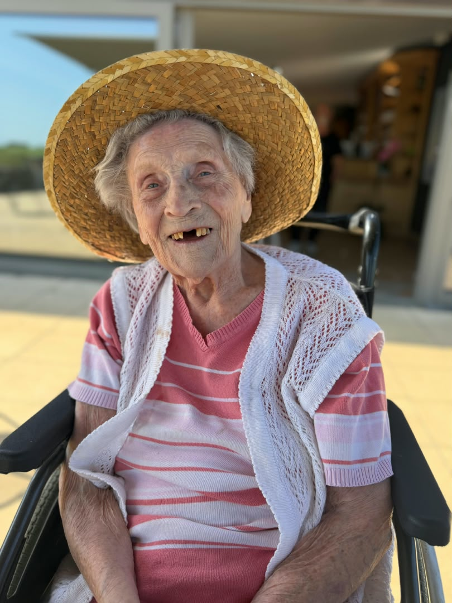
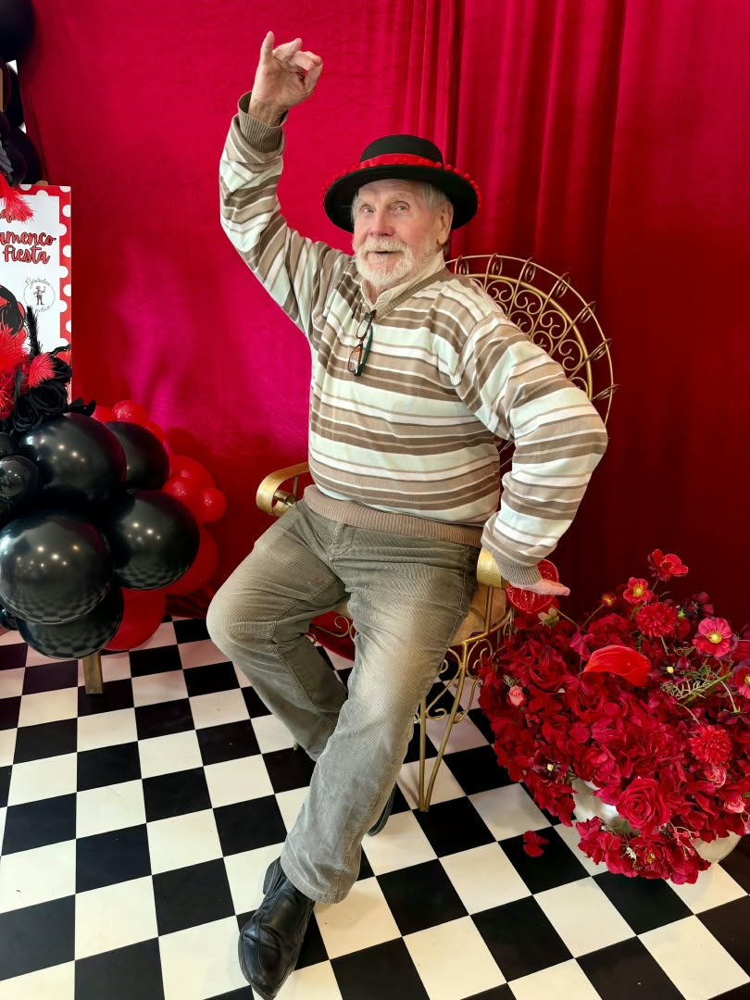
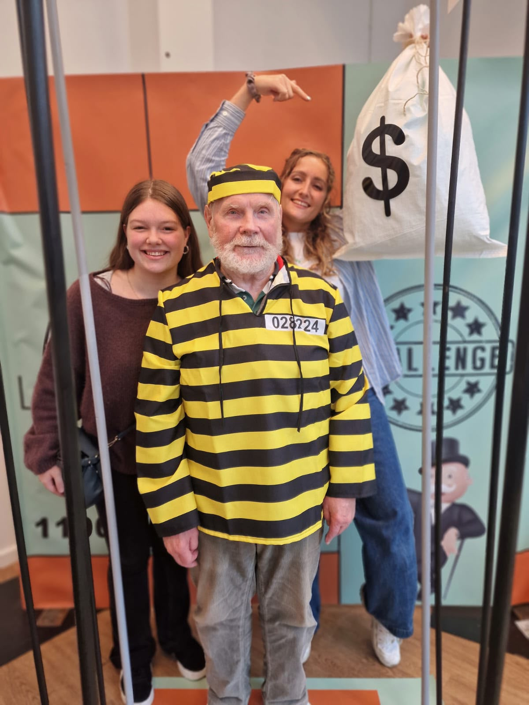
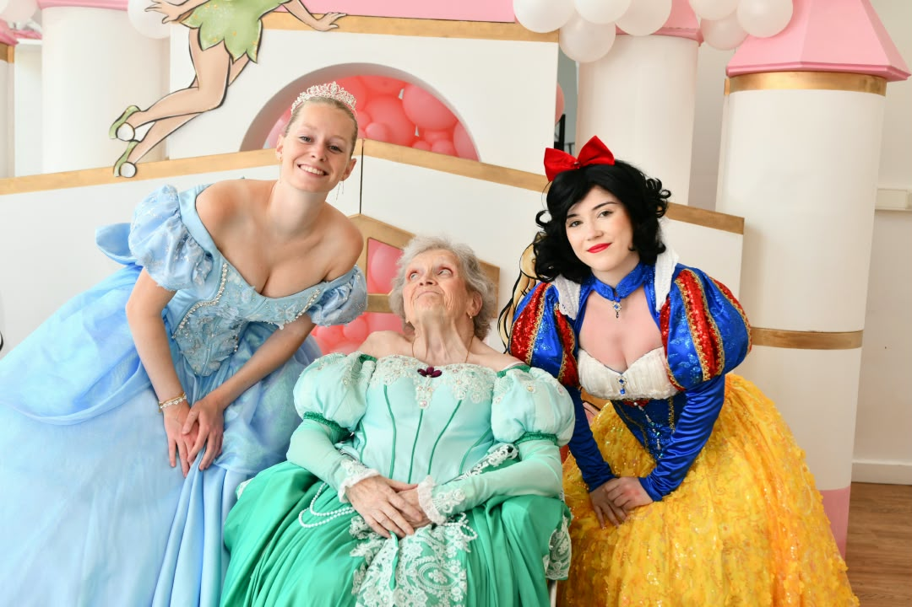
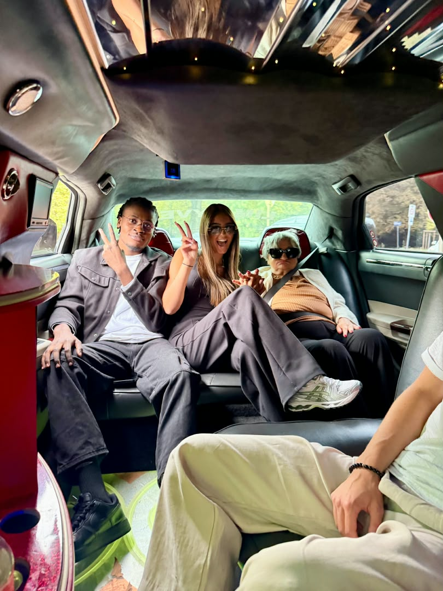
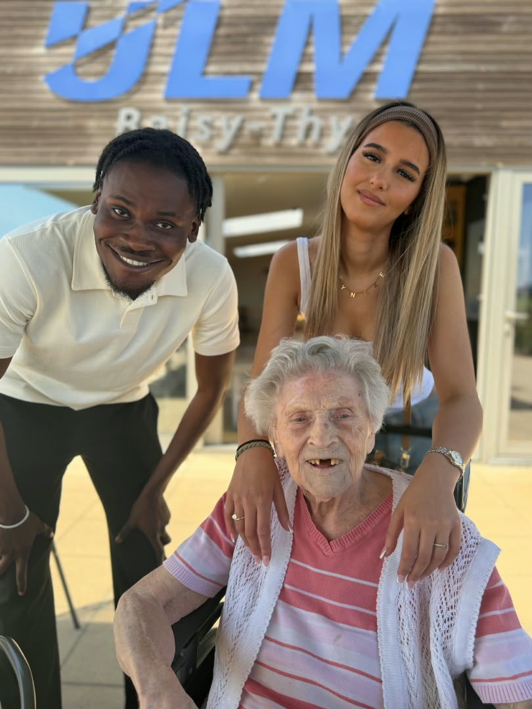

Première édition
Et vous, de quoi rêvez-vous encore ?
En 2026, Génération en Action a décidé d'aller encore plus loin en lançant J'ai un rêve senior en Région de Bruxelles-Capitale.
Pour sa première édition, nous avons collaboré avec 8 maisons de repos et réalisé plus de 26 rêves.
Un tour en Ferrari.
Un voyage intergénérationnel à Disney.
Donner le coup d'envoi d'un match de basket devant près de 6 000 personnes.
Mais derrière ces expériences extraordinaires se trouvent surtout des histoires, des rencontres et des personnes à qui nous avons simplement demandé :
« Et vous, de quoi rêvez-vous encore ? »
En 2027, l'aventure continue avec une deuxième édition.
Soutenir un rêve senior





Parce qu'entre 7 et 97 ans, il reste toujours quelque chose à partager.
Accueillir le projet en maison de repos